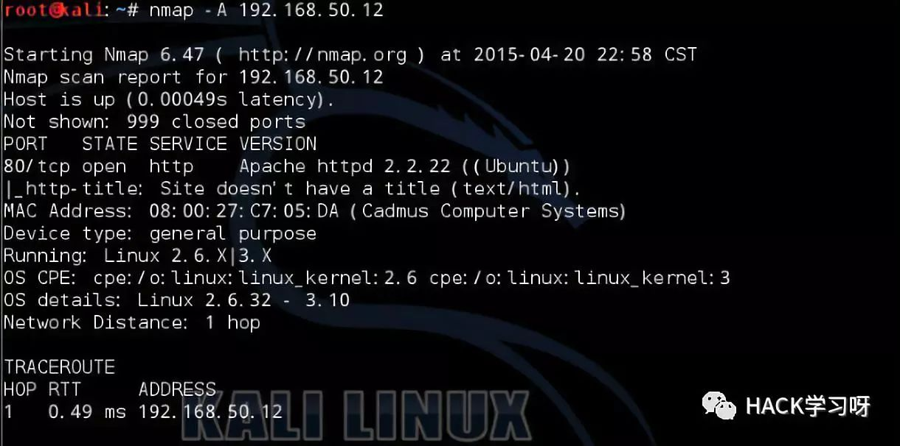
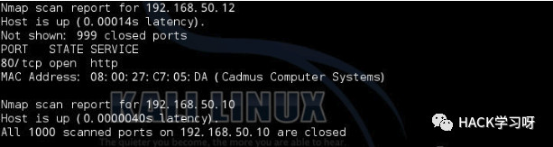

渗透测试之Nmap命令（一）

1.介绍
相信很多朋友在这之前已经对nmap有所了解，或者已经使用过nmap了，这里做一下简单的介绍。nmap（Network Mapper）最初由Gordon Fyodor Lyon于1997年创建。nmap可以用来扫描一个网络，监控服务，列出网络主机等等。namp还可以提供操作系统的类型、开放端口信息，可用过namp的配置实现。
根据官网http://namp.org介绍，nmap包含众多脚本，这些脚本的功能从猜测Apple Filing Protocol密码到确认是否与X-servers建立连接等等。
Nmap家族还包括：
ZenMap——Nmap的图形界面版。
Ncat——基于netcat，扩展了一些功能，如：ncat链、SSL支持、支持二进制等。
Ncrack——测试已部署的认证系统和密码强度，支持常用协议。
Ndiff——用于网络基线测试，对比Nmap扫描结果之间的差异。
Nping——允许将自己构造的数据包整合在扫描过程中，并能够对原始数据报进行操控。
2. Nmap常用扫描选项和类型
Nmap命令语法如下：
namp - {type(s)} -{opt(s)} {target}
常用选项：
| 扫描选项 | 名称 | 功能 |
|---|---|---|
| -g | 指定源端口 | 使用特定源端口发送数据包 |
| –spoofmac | Mac欺骗 | 创建虚假mac，随机化mac地址 |
| -S | 源Ip地址 | 伪造源IP，或指定源IP |
| -e | 选择网口 | 选择发送和接受数据的网口 |
| -F | 快速扫描 | namp-services文件中默认扫描减到100个端口 |
| -p | 确定端口范围 | 选择扫描端口 |
| -N | NDS解析 | 执行反向lookup |
| -R | 反向lookup | 强制反向lookup |
| -A | 激进型 | 启用许多扫描选项，如版本扫描和脚本扫描（慎用） |
常用扫描类型：
| 扫描类型 | 名称 | 功能 |
|---|---|---|
| -sA | ACK扫描 | 检查端口是否开放，可用于探测防火墙 |
| -sP | Ping扫描 | 快速发现网络 |
| -sR | PRC扫描 | 定位PRC，对成功扫描的机器记录 |
| -sS | TCP SYN扫描 | 快速和隐蔽的扫描，半开放扫描 |
| -sU | UDP扫描 | 确定符合特定UDP端口是否开放 |
| -sX | XMAS扫描 | 隐蔽扫描，扫描特定配置的防火墙 |
| -sL | 列出扫描对象 | 列出要扫描的IP，使用-n选项确保不向网络中发数据包 |
| -sO | IP协议扫描 | 寻找使用IP协议的主机 |
| -sM | FIN/ACK | 隐蔽扫描，适用于unix系统。查找RST数据包 |
| -sI | 闲置扫描 | 僵尸主机扫描，非常隐蔽 |
输出格式：
| 输出格式 | 名称 | 功能 |
|---|---|---|
| -oA | 所有 | 可检索的、常规的和XML文件 |
| -oG | 可检索的 | 可检索格式 |
| -oX | XML | XML格式 |
| -oN | 常规 | 常规格式，适合人阅读 |
3. 基本扫描
在这里，我开始对上一篇搭建的Ubuntu虚拟主机进行基本扫描，只进行简单的扫描，确定那些端口是开放的，使用-A选项（-A 选项扫描非常易于被发现，不适合在需要隐蔽条件下使用）。
# nmap -A 192.168.50.12

从结果看，可以判定目标主机开放了TCP的80端口，运行了Apache server 2.2.22版本，目标操作系统为Ubuntu Linux 2.6.X|3.X。 此外，-A选项启用了traceroute命令，根据结果显示，距离目标主机只有一条路由。
4. 隐蔽扫描
网络扫描的过程包括发送特殊够早的数据包给目标主机和对返回的结果进行基于某种标准的检查。从扫描结果中，我们可以知道那些主机在线，运行了哪些服务以及这些服务的版本信息等。
在一个安全的网络中，我们有可能根据需要来对抗IDS的异常行为捕捉。发送数据包的数量和速度，流量是否异常等，防火墙一般都会标记。为减少被检测到的概率，我们可以采取一些措施。
控制时间。
nmap控制扫描时间选项：
-T（0~5）： 控制扫描进度，避免被检测的最简单形式。0是最温和的，5是最激进的，只能在局域网中使用。
–max_hostgroup： 将扫描的主机数量限制在每次一个。
–max_retries： 一般不需要修改此选项，如果是紧急情况且不在意扫描过程中可能错过一个包含潜在漏洞的主机，可以将这个选项设为0.
max_parallelism 10： 一次仅允许10个探测请求。
scan_delay 两次探测之间停顿。
尝试几个选项：

从结果看，有两个主机在线，其中一个主机开放了80端口。